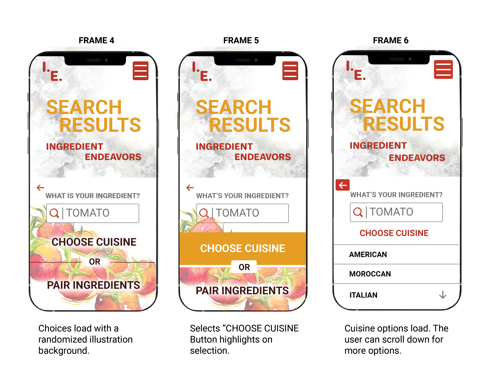
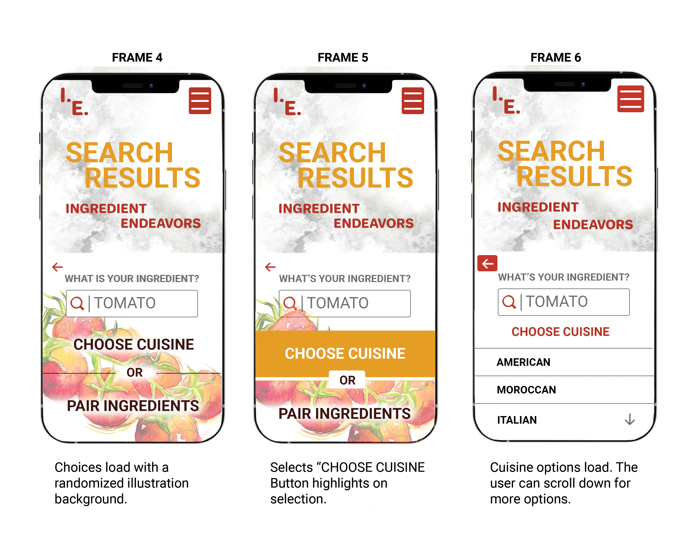

Style Guide
The final style guide returned to the color palette that commonly seen in food applications and food itself. The colors are red, yellow and green. While I worked through my process to decide the best direction for a color theme I went to my local co-op. There I took photos of the produce and then added them to a color generator for palette inspirations. The image of tomatoes inspired my direction for the rest of the guide.


Infographic
This infographic is based on data I had collected during my journey in 73 weeks of meal planning. It represents the of the number of cuisines repeated over that time in number and percentages. They are separated into two categories, mains and sides.
After completing the infographic I wanted to comment about my findings and provide additional notes. These can be found under the "OUTCOME"section. There is an explanation that I had not included every recipe that I had made during that time, but only ones that I could clearly identify under specific cuisines. Also, I mention the limitations I had on ingredients and how that may have influenced the results. I found it to be quite enlightening!

Prototype
The goal of my final prototype is to demonstrate the task flow of user's journey. The user searches their desired ingredient, finds an inspiring recipe that includes the ingredient and creates a grocery list based off of their selections.
The User Journey
The frames below are labeled left to right for the task direction. Below each frame are descriptions of the user's actions as well as how the Ingredient Endeavors application responds to them.
 



Illustration
These illustrations had a prominent presence in the app because of my illustration background. I wanted to include them to demonstrate my ability to bring my background of illustration together with both my academic and professional experiences and to demonstrate those disciplines.
I focused mainly on creating imagery based on the ingredients in Eggs in Purgatory. These are the herbs, tomatoes and of course the finished dish, a skillet with tomatoes and eggs. I also added additional art that was used throughout this project.